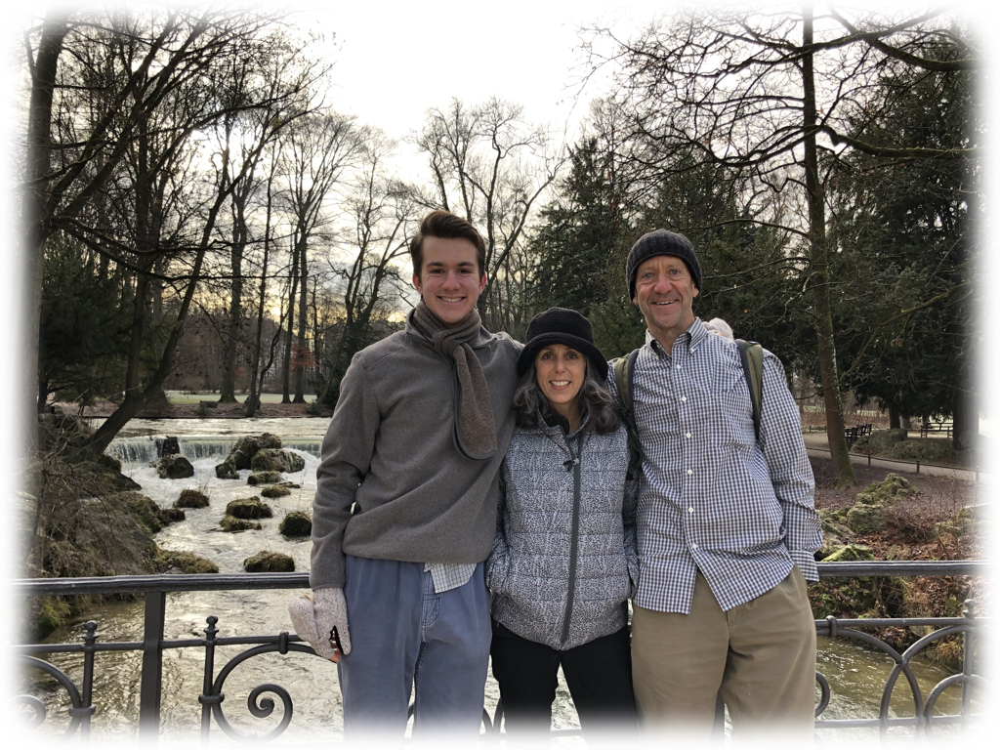
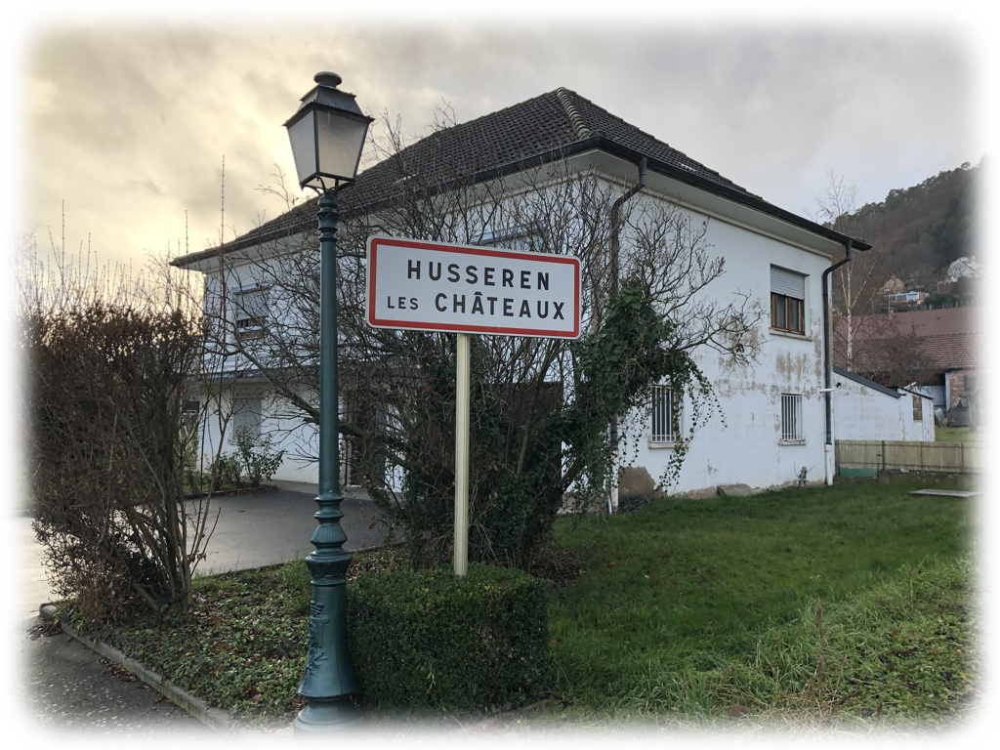
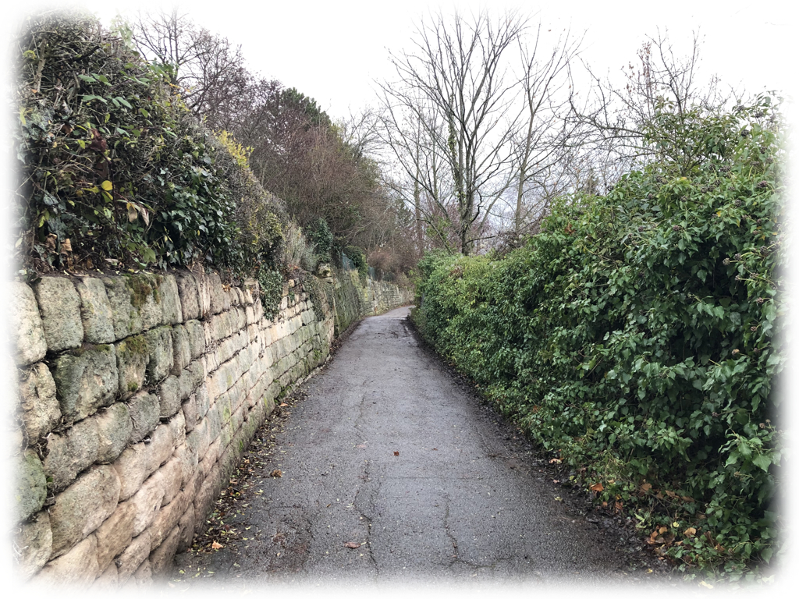
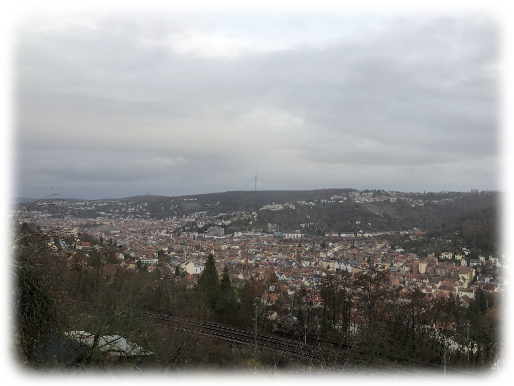
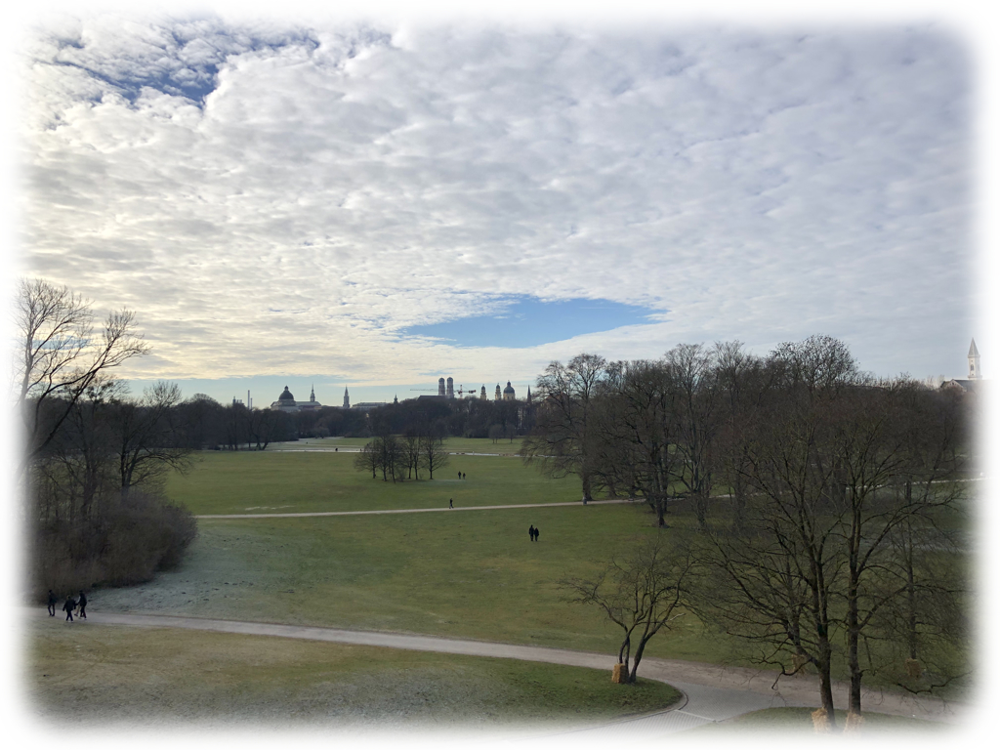
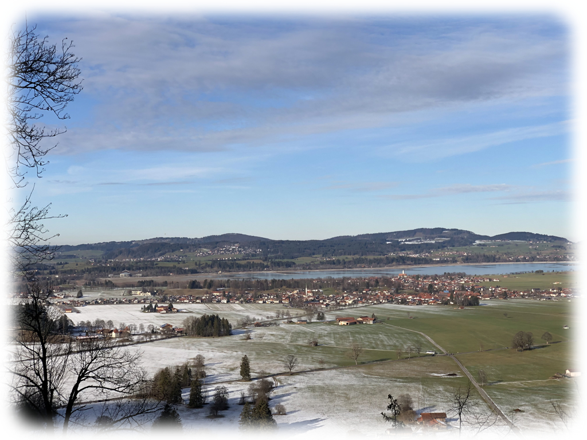

Halloween in January
January 7, 2019
Keeping in Touch
Here we are, into yet another year, when 2016 still feels new — to me, at least. Germany flips between extremes at Christmastime (notably, not the holiday season — I haven’t gotten so much as a whiff of other holidays). First come the Christmas markets, full of glühwein, wurst, and handmade crafts. It’s a warm, festive place, one that brings all ages together. That’s something we don’t really have in the US — a regular, popular event for everyone.
But as Christmas approaches, there’s a complete shutdown of every business, market or not. Discussions I was having about visas were put abruptly on hold until the new year. It’s very difficult to buy food for a three-day stretch around Christmas, and so stocking up beforehand is well-advised. It could be a lonely time, with so little to do — but I had family visiting, and loneliness was far from my mind.
My parents made the trip all the way from California, complete with unexpected difficulties of their own (rental car suddenly unavailable, for one). But they made it in one piece, and stayed for two weeks.

We stayed in and around Freiburg for the first week — I still had school. But we managed to see a lot, including Colmar, France and Ravenna Gorge (not pictured).


{kind=link}
{kind=link}
{kind=link}
{kind=link}
{kind=link}
Expanding Horizons
Once I was out, though, we were hardly in Freiburg at all. Our first stop was Stuttgart, a large enough city that its citizens’ license plates have their city identifer as just S, when almost all are at least two letters. We followed a phone’s guidance just a bit too closely, and ended up on top of a hill in the middle of the city, driving down a path so narrow there was no room to turn around. It’s a wonder we ever got out.

{kind=link}
Stuttgart is a beautiful city, and its Christmas market is one of the largest in Germany — big enough that in addition to the usual brat and glühwein, there’s massive ham sandwiches, glühbier, and all manner of niche handmade crafts. We were caught in the rain on the long walk back to our car, but it was well worth it.

{kind=link}
We next planned to travel to Titisee and Feldberg, but that unfortunately never panned out, and our next trip ended up being after Christmas, to Munich.
{kind=link}
After a five-hour drive, stopping by Bodensee / Lake Constance, we barely had time the first day in Munich to visit the Hofbräuhaus, a massive three-story tavern in the city center. With a liter-and-a-half of beer and a massive pretzel easily double the usual German size, it felt like Oktoberfest in late December — or maybe Halloween in January.
We set out early the next day for the English Gardens, a fifteen-mile stretch of open space in the center of Munich. It’s little wonder it’s the largest city park in Europe.

{kind=link}
{kind=link}
{kind=link}
{kind=link}
{kind=link}
{kind=link}
On the way back, we stopped at Castle Neuschwanstein, the famous fairy-tale of a monument nestled up against the Alps. Tickets to enter were booked two weeks out, but seeing the outside and the expansive view was more than enough — for this time.

{kind=link}
{kind=link}
{kind=link}
Adieu
Then there was suddenly just one day left. We spent it wandering the city — lunch at a restaurant tucked away in the Black Forest, board games at Freispiel (a store that has a library of thousands and charges one euro an hour), and then Italian food at an out-of-the-way place that was better than we could have hoped. It was a neatly wrapped conclusion.
I was alone the next week, which included New Year’s, and I saw firsthand just how crazy the holiday is in Germany. Everyone over five is shooting off fireworks, half the time at one another, from 10 at night until 2 in the morning. It’s a sight to see. From a distance.
And now, just today, school has started once again. I’m getting closer to leaving, and it’s hard to believe. Germany has been such a big change in nearly every rhythm there is that it’s going to be a shock coming back.
I can’t wait.
Run right along, right along
We got everything we need
Are we there yet
Or are we somewhere in between?
Morningsiders, Somewhere in Between